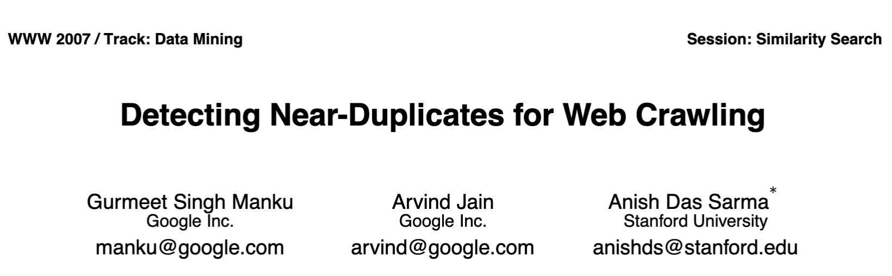
The paper aims to:
In this work only the “batch” version of the proposed algorithm is implemented, using PySpark.
Near-duplicates generally fall into two non-exclusive categories:
Semantic
Similar meaning:
“a senior couple strolls along the beach while holding hands during sunset”
\(\approx\)
“an older couple walks hand in hand on the beach at sunset”
Syntactic
Similar structure:
“The quiet librarian suddenly discovered a valuable manuscript inside the forgotten wooden cabinet”
\(\approx\)
“The quiet mechanic suddenly discovered a dangerous leak inside the forgotten engine cabinet”
Duplicates are commonly detected using hash functions.
However, hash functions may return vastly different digests for very similar data.
A fingerprint is a string of bits of some fixed length that identifies some data. Fingerprints are generated combining features extracted from data (SimHash algorithm).
For text data, four different feature models are tested in this work:
Each word in a text is considered a feature. Easy to compute, but cannot detect locality.
A feature is a contiguous series of elements in a text. Elements can be words or characters, and can be overlapping. It can generate a large number of features but can detect locality, to some degree.
A more sophisticated variant of “Bag of words”. TF-IDF stands for Term Frequency - Inverse Document Frequency. Each word is weighted for their rarity, inside its text and in the whole dataset. Rare words have higher weights, while common words have lower weights. It requires to re-compute all fingerprints when the dataset changes, making it taxing to compute and maintain.
Each text is converted into a set of weights, using the embedding model Qwen3-embedding:0.6b. The fingerprint is obtained by quantizing each float weight to 0/1, using the median as pivot. Can require large amount of memory for long inputs.
Performed on the llm-paraphrases dataset.
TF-IDF is the slowest model: it requires to create a frequency map of all words in the dataset. Embeddings performance might get worse on datasets with longer texts.
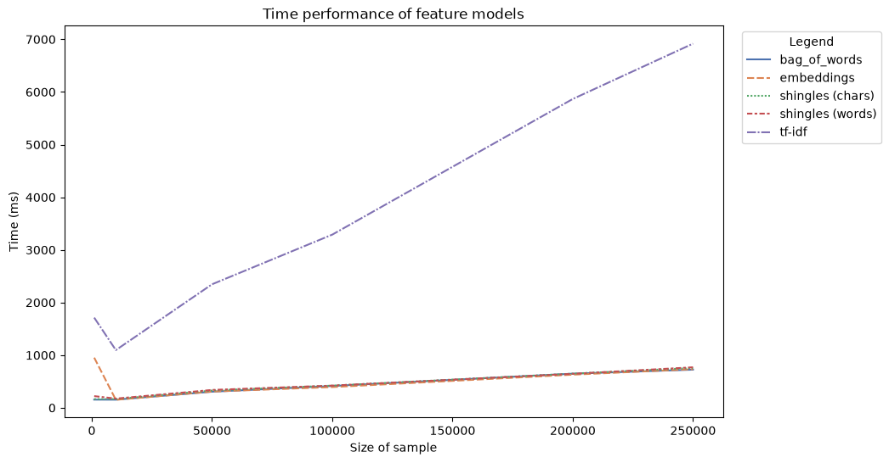
All features of some data are combined by taking the most popular value for each bit index. This can be sped up using FastSimHash.
…
Suppose to have two fingerprint DataFrames, query and dataset (query is always the smaller DataFrame).
This algorithm prioritizes locality: only query fingerprints and partitions are once sent from the driver to the workers.
The graph below shows the expected number of candidates for each query row at different \(K\) values. Higher \(K\) values forces the algorithm to adopt small partitions, which generate a large amount of candidates.
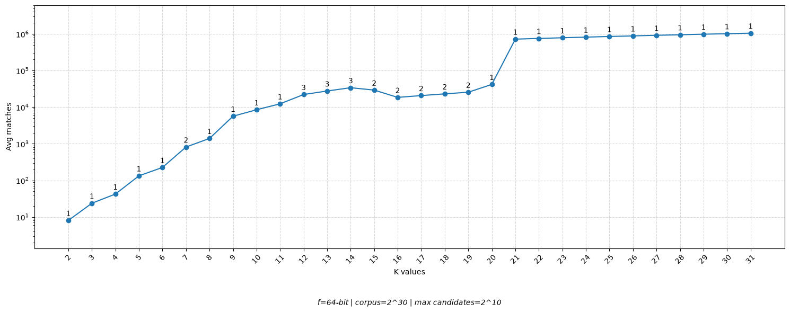
Sample of 199 rows with 76 near-duplicate rows.
| data1 | data2 | is_near_duplicate | |
|---|---|---|---|
| 0 | Astrology: I am a Capricorn Su… | I’m a triple Capricorn (Sun, M… | True |
| 1 | How can I be a good geologist? | What should I do to be a great… | True |
| 2 | How do I read and find my YouT… | How can I see all my Youtube c… | True |
| 3 | What is the step by step guide… | What is the step by step guide… | False |
| 4 | What is the story of Kohinoor … | What would happen if the India… | False |
| 5 | How can I increase the speed o… | How can Internet speed be incr… | False |
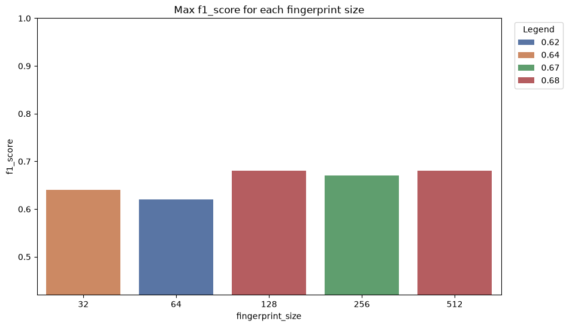
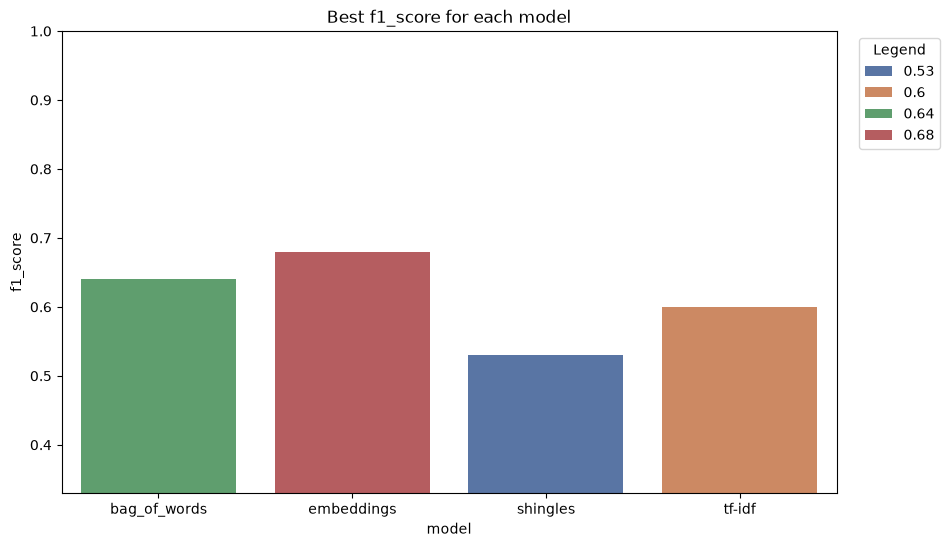
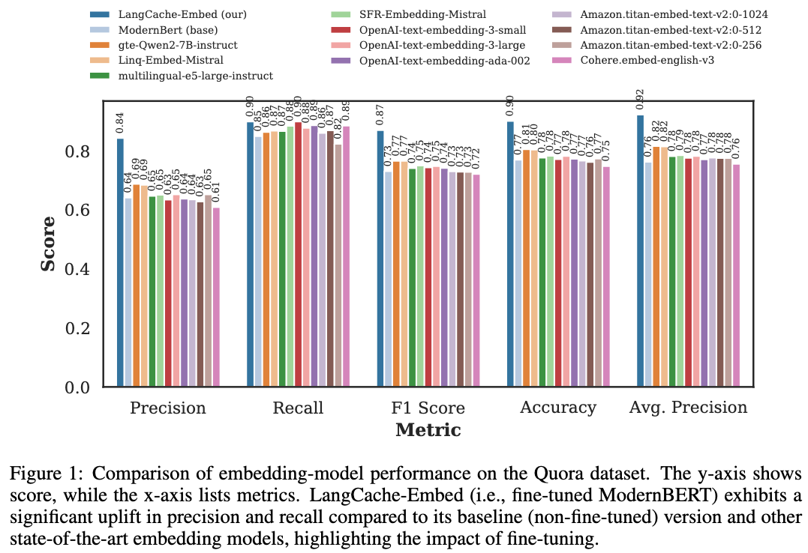
Computed on 64 bits fingerprints.
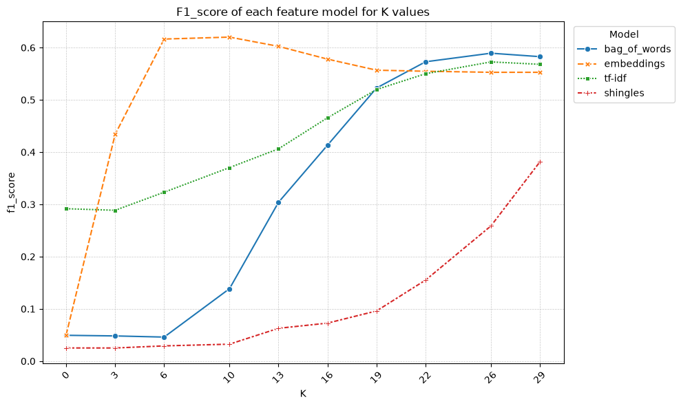
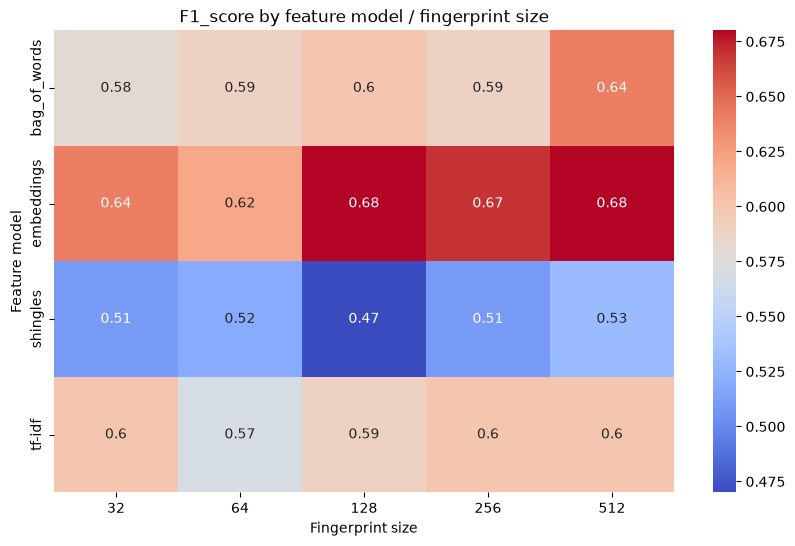
3-shingles over words seem more effective.
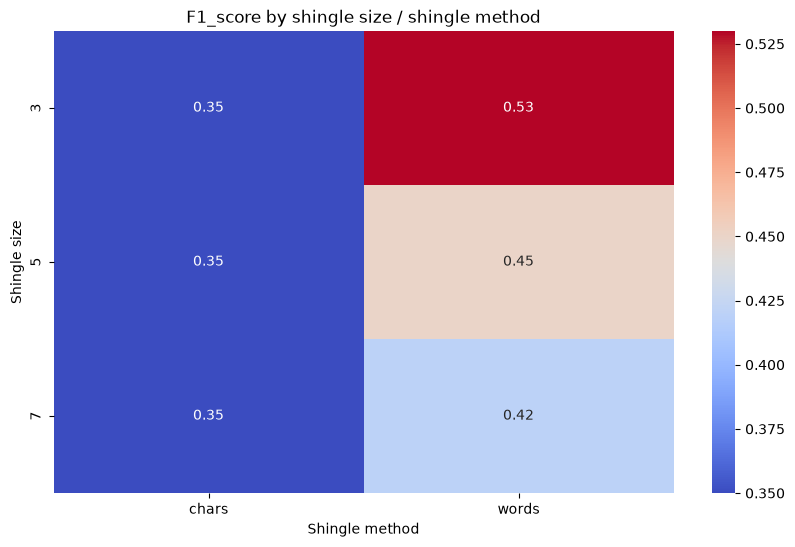
The \(K\) sweet spot is around 5 to 6.
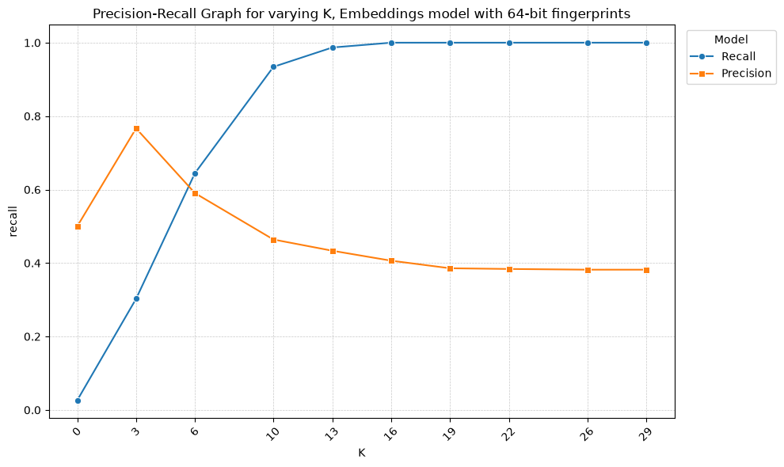
Dataset composed of 1000 wikipedia entries pairs. Half of them are the same entry but with some random noise (altered words), from 5% to 10%. The other are pairs of completely different entries. Due to the large size of each entry, the Embeddings feature model is not considered for this analysis.
| data1 | data2 | is_near_duplicate | |
|---|---|---|---|
| 0 | anarchism is a political philo… | anarchism casa a political phi… | True |
| 1 | albedo is the fraction of sunl… | albedo vedere the fraction of … | True |
| 2 | a or a is the first letter and… | a or persona is the first lett… | True |
| 3 | in greek mythology alcmene or … | in propositional logic affirmi… | False |
| 4 | alcidamas of elaea in aeolis w… | ambiorix gaulish king of the s… | False |
| 5 | the aldine press was the print… | the natural history of africa … | False |
All features models are strong enough to ignore syntactical noise.
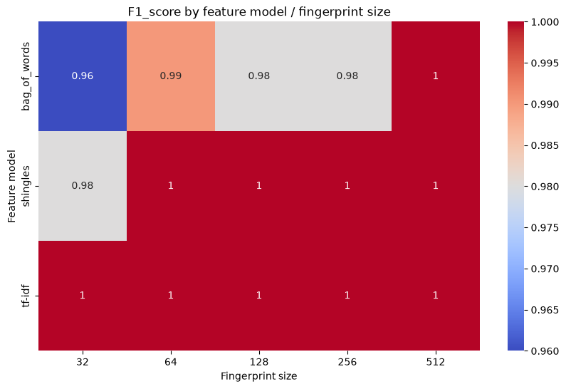
A fork of the popular c4 dataset, contains Italian web pages content. This dataset isn’t deduplicated.
| data | |
|---|---|
| 0 | avete voglia di qualcosa di buono prepariamoci allora un bel buddino non e … |
| 1 | attenzione che la mail automatica di conferma iscrizione non sempre funzion… |
| 2 | nella lingua parlata e anche scavando nelle culture di varie popolazioni il… |
| 3 | ricorre oggi il bicentenario della nascita di charles darwin dopo tanti ann… |
| 4 | un laboratorio di newcastle in inghilterra ha ottenuto l autorizzazione a c… |
| 5 | quella di clearurls una bella missione spinta dal desiderio di maggiore pri… |
| 6 | bonifacio comune localizzazione stato francia regione corsica dipartimento … |
| 7 | questa pagina ancora da trascrivere o incompleta pato ad achille ubbidisca … |
| 8 | questa pagina stata trascritta e formattata ma deve essere riletta della ri… |
| 9 | le istruzioni che seguono sono contenute nella sottopagina template non fir… |